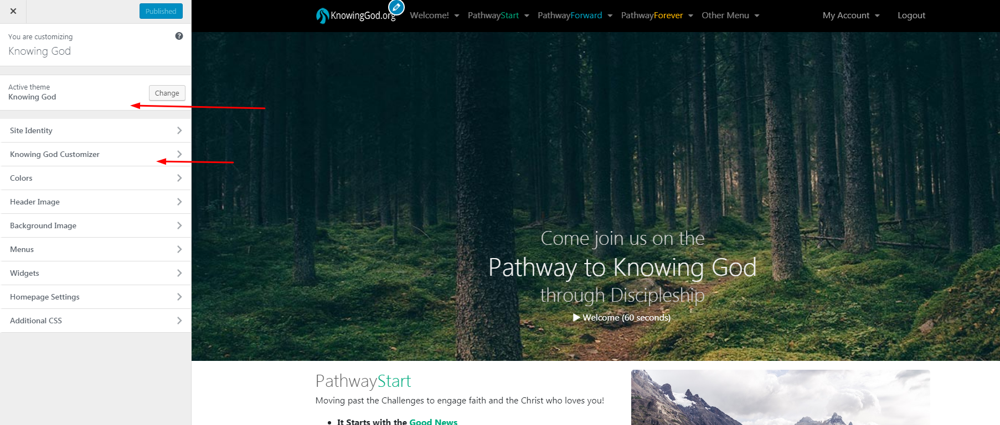
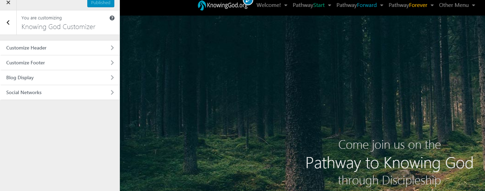

You can customize the website using customizer options Click on Appearance > Customizer > Knowing God Customizer, and you will see the theme options. Set the options according to your needs. The theme options are listed below with explanations.
 
- Site Identity - Site logo, Site title , Site icon options are here.
- Knowing God Customizer - Manage blog post settings, Header settings-banner, breadcrumb , Footer and social Icons settings.
- Colors - Manage background color settings.
- Header Image - Customize your website header image
- Background Image - Manage background settings.
- Menus - Manage menu settings, display location
- Widgets - All sidebar and footer theme related widgets can be found here.
- Home Page Settings - Display of Front page and blog page settings